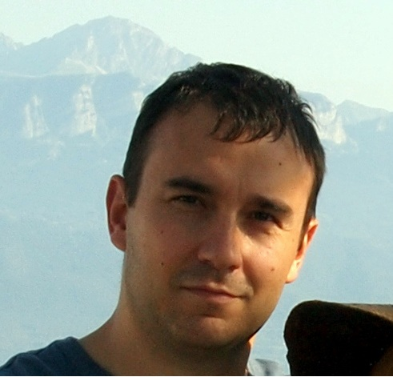
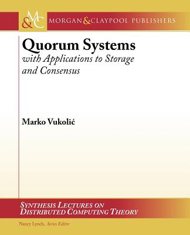

|  |
Marko VukolićResearch Staff Member @ IBM Research
|
 |
[ News ] [ Short bio ] [ Research Interests] [ Activities ] [ Publications ] [ Current Projects ]
I will be giving invited/keynote talks about Hyperledger Fabric v1 at The First ACM Workshop on Blockchain, Cryptocurrencies and Contracts (BCC'17), DAIS 2017 and EPFL/ETHZ Blockchain Summer School. Related paper on why we redesigned and re-invented permissioned blockchains with Hyperledger Fabric v1 is available here.
Before re-joining IBM (where I was also a Post-Doc and Intern) as a Research Staff Member, I was a faculty in EURECOM, and a visiting professor at Systems Group @ ETH Zurich.
I obtained a Doctor of Science (PhD) degree in Distributed Systems from EPFL in the Distributed Programming Laboratory (LPD) in 2008.
Before PhD, I graduated from EPFL Doctoral
School in Computer and Communication Sciences in 2003 and obtained a dipl.ing. degree in Electrical Engineering (Telecommunications) from School of Electrical Engineering, University of Belgrade, in 2001.
My research interests lie in the broad area of distributed algorithms and systems. Some more specific topics that I am (currently) interested in include fault-tolerance, blockchain and distributed ledgers, cloud computing security and distributed storage.
One interesting open source project I have been working on recently is Hyperledger fabric.
I am always looking for talented students who want to do an internship or a PhD @IBM.